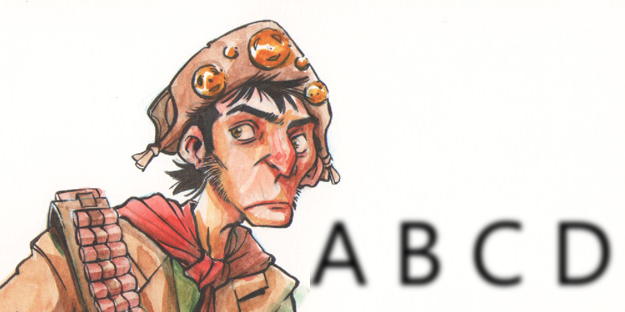

Dicionário Completo de Nordestinês
TADS 2015.2
CABARÉ: Prostíbulo ou confusão.
CABEÇA-DE-PREGO: Furúnculo.
CABRA: Qualquer Indivíduo.
CABRA DA PESTE: Indivíduo destemido, provocador ou valentão.
CABRA SAFADO: Indivíduo de atitudes incorretas.
CABRA-MACHO: Indivíduo destemido, provocador ou valentão.
CABUÊTA: Dedo duro.
CAÇOAR: Zombar.
CACUNDA: Costas, dorso.
CADEIRAS: Quadris, quartos.
CAFUÇÚ: Pessoa desajeitada, mal vestida, mala.
CAFUNDÓS DO JUDAS: Lugar distante.
CAGADO: Sortudo.
CAGADO E CUSPIDO: Encarnado e esculpido. Idêntico, igual, muito parecido.
CALANGO: Lagarto pequeno, típico do Nordeste.
CALIFOM: Sutiã.
© José Augusto